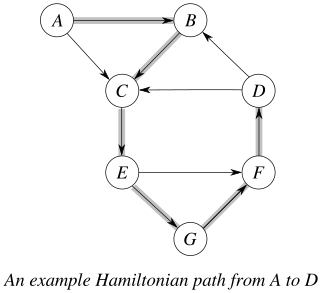
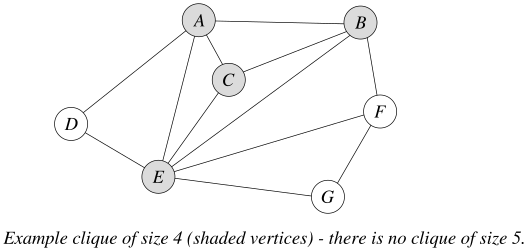
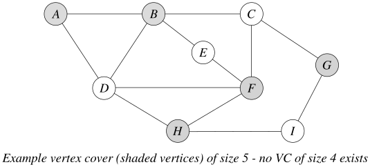

A Hamiltonian path in a simple path that goes through every vertex of the graph (a “simple path” is one in which no vertex appears more than once). In other words, it goes through every vertex once and only once. When asking for a Hamiltonian path in a graph, we may specify the endpoints or leave them free to be anything. A Hamiltonian cycle is a cycle in which each vertex appears exactly once. A graph is Hamiltonian if it contains a Hamiltonian cycle. These definitions can apply to either directed or undirected graphs. The example below shows a directed graph with a Hamiltonian path (shaded) from \(A\) to \(D\).

This graph also has a Hamiltonian path from \(A\) to \(B\), but these are the only two Hamiltonian paths. The graph has no Hamiltonian cycles, which is easy to see since there are no edges directed into vertex \(A\). If an edge were added from \(B\) to \(A\), then there would be a Hamiltonian cycle (and the graph would be Hamiltonian).
If we removed the direction from each edge, making it an undirected graph, then the undirected graph would be Hamiltonian.
A clique in a graph \(G=(V,E)\) is a subset of vertices \(V'\subseteq V\) that is completely connected: given any pair of vertices \(u,v\in V'\), there is an edge between \(u\) and \(v\). Two endpoints of an edge form a clique of size 2, and a “triangle” of three vertices in the graph is a clique of size 3. When we look for cliques in a graph, we are generally interested in finding the largest possible clique. The following picture illustrates a clique of size 4 in a graph:

Fun fact: Almost all simple examples that are drawn for teaching are planar graphs – graphs that can be drawn on a flat surface without any two edges crossing. A planar graph cannot have a clique of size 5, so to draw you a picture of a graph with a clique of size 5 would require some edges crossing in the picture!
A vertex cover in a graph \(G=(V,E)\) is a subset of vertices \(V'\subseteq V\) such that for every edge \(e=(u,v)\) in the graph at least one of its endpoints is in \(V'\) (this “covers” the edge). The full set of vertices \(V\) is always a valid vertex cover, since both endpoints of every edge will be covered. When we look for vertex covers in a graph, we are generally interested in finding the smallest possible vertex cover. The example below shows a graph with a vertex cover of size 5. While other vertex covers of size 5 exist, there are no smaller vertex covers.
